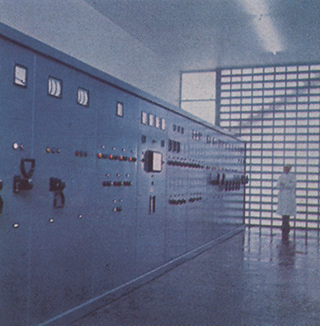

A brief overview of ancient computers
Before personal computers sat on every desk, the computing world was dominated by massive, room-sized machines known as mainframes. Emerging in the mid-20th century, these industrial giants—built by pioneers like IBM and UNIVAC—were the undisputed workhorses of governments, banks, and large corporations. Operating inside climate-controlled "glass houses," early mainframes relied on thousands of humming vacuum tubes, magnetic tape reels, and punched cards to process mountains of data. Though a modern smartphone holds exponentially more processing power, these towering systems laid the digital foundation of the modern world, reliably handling everything from the U.S. Census and airline reservations to the Apollo space missions.